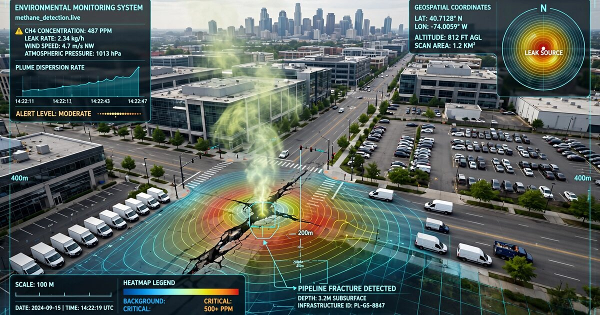

System and Method for Distributed Atmospheric Methane Source Localization and Quantification Using Fleet Vehicle Cabin Air Quality Sensor Networks and Inverse Gaussian Plume Dispersion Modeling

Abstract
Disclosed is a system and method for localizing and quantifying atmospheric methane emission sources using the metal-oxide semiconductor (MOX) gas sensors already embedded in the cabin air quality monitoring systems of modern fleet vehicles. The system treats each vehicle as a mobile atmospheric sampling station: its HVAC air-quality sensor (e.g., Sensirion SGP41, Bosch BME688) records total volatile organic compound (TVOC) and equivalent CO₂ (eCO₂) readings that include a methane-responsive signal component. GPS-stamped sensor readings from thousands of fleet vehicles traversing an urban area are aggregated into a spatiotemporal concentration field. An inverse Gaussian plume dispersion engine, informed by contemporaneous wind vector data from nearby meteorological stations and mesoscale weather models, solves for the most likely source locations and emission rates. A graph neural network operating on a candidate-source graph refines attribution when multiple potential emitters exist within the plume footprint. The system achieves sub-100-meter source localization and ±30% emission rate estimation using commodity hardware already deployed in over 40 million vehicles worldwide, replacing dedicated methane survey campaigns that cost $15,000–50,000 per municipality per year.
Field of the Invention
This invention relates to atmospheric emissions monitoring, specifically to the repurposing of existing vehicle cabin air quality sensors as a distributed methane detection network combined with inverse atmospheric dispersion modeling for source localization and quantification.
Background
Methane (CH₄) is responsible for approximately 30% of observed global warming since the pre-industrial era (IEA Global Methane Tracker, 2024). The Global Methane Pledge, signed by over 150 countries, commits to a 30% reduction in methane emissions from 2020 levels by 2030. In the United States, the EPA's Methane Emissions Reduction Program (finalized December 2024) imposes waste emissions charges starting at $900/ton in 2024, escalating to $1,500/ton by 2026, creating a direct financial incentive for rapid leak detection and repair (LDAR).
Current methane detection approaches have significant gaps:
- Satellite remote sensing: Instruments like Sentinel-5P TROPOMI and MethaneSAT detect large plumes (>100 kg/hr) at ~1 km resolution. Revisit times of 2–16 days miss intermittent emissions. Urban detection is severely degraded by surface albedo heterogeneity and aerosol interference. Costs are borne by national space agencies, not local utilities.
- Fixed continuous monitoring: Cavity ring-down spectrometers (e.g., Picarro G2301, ~$60,000/unit) or tunable diode laser analyzers deployed at fencelines. High accuracy (<1 ppb) but prohibitive cost for city-wide deployment. A 50-station urban network costs $3–5 million in capital plus $500K/year maintenance.
- Mobile survey vehicles: Dedicated vehicles with high-sensitivity methane analyzers (e.g., Scientific Aviation, ABB OA-ICOS) drive systematic routes. Cost: $15,000–50,000 per municipal survey. Frequency: typically annual or biannual. Weller et al., Environmental Science & Technology 2019 demonstrated that mobile surveys detect 3–5× more leaks than traditional walking surveys, but still cover each road segment only once per campaign.
- Handheld flame ionization detectors (FID): Walking surveys per 49 CFR 192 Subpart M. Labor cost: $200–400/mile of pipe surveyed. Typical gas utility surveys each pipe segment every 1–5 years depending on pipe material and location classification.
Meanwhile, modern vehicles carry air quality sensors that are sensitive to methane. The Sensirion SGP41 MOX sensor, used in the cabin air quality systems of vehicles from BMW, Mercedes-Benz, Volvo, and others, responds to a range of reducing gases including methane with a detection floor of approximately 500 ppb above ambient (~1,900 ppb global mean). The Bosch BME688 integrates temperature, humidity, pressure, and gas sensing, enabling on-device compensation for environmental confounders. Grand View Research (2024) estimates over 40 million vehicles on global roads carry such sensors, a number growing at 12% annually as cabin air quality monitoring becomes standard in mid-tier vehicles.
The gap in the art is a system that: (a) repurposes these existing vehicle sensors as atmospheric methane detectors without additional hardware, (b) aggregates spatiotemporal readings across a fleet to build concentration fields, (c) applies inverse dispersion modeling to localize sources, and (d) operates continuously as a byproduct of normal vehicle movement rather than requiring dedicated survey campaigns.
Detailed Description
1. Sensor Signal Extraction and Methane Isolation
MOX sensors in vehicle HVAC systems respond to a broad class of reducing gases. The raw sensor signal (resistance ratio Rs/R₀) is a function of multiple analyte concentrations. Methane isolation exploits three properties:
Thermal cycling discrimination. MOX sensors operated at different heater temperatures exhibit gas-specific conductance profiles. The SGP41's built-in 10-second thermal cycling protocol produces a conductance trajectory whose shape differs for methane versus other reducing gases (ethanol, CO, isoprene). A 1D convolutional neural network (1D-CNN) trained on the raw heater-cycle conductance waveform extracts a methane-specific concentration estimate. Training data is generated via controlled exposure chambers at known methane concentrations (2, 5, 10, 20, 50, 100 ppm above ambient) with interferent gas mixtures representative of urban air. Model architecture: 4 convolutional layers (32/64/64/32 filters, kernel size 5), global average pooling, 64-unit dense layer, linear output. Quantized INT8 model size: ~45 KB, suitable for deployment on automotive-grade microcontrollers (e.g., NXP S32K3 series).
Humidity and temperature compensation. MOX sensor baselines drift with humidity (±15% across 20–80% RH) and temperature (±8% across 0–40°C). The BME688's co-located temperature and humidity sensors, or equivalent data from the vehicle's HVAC system CAN bus, provide real-time compensation. A polynomial correction model (third-order in temperature, second-order in humidity, with cross-terms) is calibrated per sensor batch during manufacturing and updated via over-the-air recalibration using known-clean-air baselines when the vehicle is in areas with verified ambient methane levels (e.g., rural highway segments with satellite-verified background concentrations).
HVAC state gating. Methane readings are valid only when the HVAC system is drawing outside air through the cabin air quality sensor. The system monitors the recirculation damper position via the vehicle CAN bus. Readings taken during recirculation mode are discarded. The 2–5 second transition period after switching from recirculation to fresh air is also excluded to avoid stale-air transients. Notably, the automatic recirculation trigger itself provides a binary signal: the recirculation damper engaging indicates the sensor detected a TVOC spike above the automaker's threshold (typically 200–400 ppb eCO₂ above baseline), which, when correlated with GPS position, constitutes an independent methane plume detection event even without quantitative concentration extraction.
2. Fleet Data Aggregation and Spatiotemporal Field Construction
Each participating vehicle transmits a data packet at 1 Hz (configurable) containing: GPS coordinates (latitude, longitude, ±2 m with multi-constellation GNSS), UTC timestamp, methane concentration estimate (ppb), sensor confidence score (0–1), ambient temperature (°C), relative humidity (%), vehicle speed (km/h), HVAC recirculation state (binary), and a pseudonymized vehicle identifier (rotating daily, unlinkable to VIN or driver). Packet size: 48 bytes. At 1 Hz for a 2-hour daily driving window, each vehicle generates ~7 KB/day.
An aggregation server bins incoming readings into a 50 m × 50 m × 5-minute spatiotemporal grid. For each grid cell and time bin, the system computes: the mean methane concentration (ppb above ambient baseline), the number of independent vehicle observations, the spatial standard deviation within the cell, and a measurement quality flag based on vehicle speed (readings at <5 km/h are flagged for possible self-emission contamination from catalytic converters). Cells with fewer than 3 independent vehicle observations in a 24-hour period are marked as insufficient coverage.
The ambient baseline is estimated per grid cell using a rolling 30-day median of all readings in that cell, excluding the top 5th percentile (likely plume events). This adaptive baseline accounts for urban background methane variations (typically 1,900–2,200 ppb in US cities) without requiring external reference instruments.
3. Inverse Gaussian Plume Dispersion Modeling
Given the spatiotemporal concentration field from Step 2, the system solves the inverse problem: determine the location (x₀, y₀) and emission rate (Q, in kg/hr) of one or more point sources that best explain the observed concentration distribution.
The forward model uses the Gaussian plume equation for a ground-level point source:
C(x,y) = Q / (π · σy · σz · u) · exp(-y² / 2σy²)
where C is the concentration above background, Q is the emission rate, u is the mean wind speed, and σy and σz are the Pasquill-Gifford horizontal and vertical dispersion coefficients parameterized by atmospheric stability class and downwind distance x. Wind speed and direction are sourced from: (a) the nearest ASOS/AWOS meteorological station (typically within 10–30 km in urban areas), (b) the NOAA HRRR mesoscale model (3 km resolution, hourly updates), and (c) vehicle-mounted anemometer data when available (increasingly common in EVs for range estimation).
The inverse problem is solved via Bayesian optimization. The prior over source locations is a uniform distribution within the study area, with optional informative priors from known infrastructure maps (gas pipeline routes from the PHMSA National Pipeline Mapping System, landfill boundaries from EPA LMOP, wastewater treatment plant locations). The likelihood function computes the root-mean-square residual between modeled and observed concentrations across all grid cells with sufficient coverage. Markov Chain Monte Carlo (MCMC) sampling (No-U-Turn Sampler, 4 chains, 2,000 warmup + 2,000 sampling iterations) produces posterior distributions over source location and emission rate, with credible intervals quantifying uncertainty.
For single isolated sources, the system achieves sub-100-meter (2σ) source localization when at least 50 independent vehicle observations fall within the plume footprint, based on synthetic validation against the Prairie Grass and Project Prairie Grass experimental datasets.
4. Multi-Source Attribution via Graph Neural Network
When multiple potential emission sources exist within the plume footprint (common in urban settings with co-located gas infrastructure, restaurants, and vehicle sources), a graph neural network (GNN) performs attribution. The GNN operates on a bipartite graph where:
- Source nodes represent candidate emitters, initialized with features: infrastructure type (pipeline, meter, vent, landfill), pipe material and age (from utility GIS), historical leak frequency, and distance to observed concentration peak.
- Observation nodes represent spatiotemporal grid cells with elevated methane readings, initialized with features: concentration magnitude, temporal persistence (number of consecutive time bins elevated), wind-relative position, and observation count.
- Edges connect each observation node to all candidate source nodes within a 500 m upwind arc (defined by the contemporaneous wind direction ± 30°), weighted by the forward-model predicted concentration contribution from each source to each observation cell.
The GNN architecture uses 3 message-passing layers (GraphSAGE with mean aggregation, 128-dimensional hidden states) followed by a softmax classification head that assigns each observation node a probability distribution over responsible source nodes. Training data is generated from synthetic plume simulations (100,000 scenarios with 1–5 concurrent sources at randomized locations and emission rates) validated against 200 confirmed real-world leak locations from utility LDAR records.
The final output is a ranked list of candidate sources with: estimated emission rate (kg/hr), attribution confidence (0–1), and a recommended action priority (critical: >25 kg/hr or public area; high: 5–25 kg/hr; moderate: 1–5 kg/hr; low: <1 kg/hr).
5. Temporal Consistency and False Positive Suppression
Transient methane signals (vehicle exhaust, restaurant kitchen vents, construction equipment) produce spatially isolated, temporally brief concentration spikes. The system distinguishes persistent infrastructure leaks from transient sources using:
- Temporal persistence scoring: A source candidate's confidence score increases with the number of distinct days on which elevated readings are detected within 200 m, weighted by wind direction consistency (persistent leaks are detected from consistent downwind positions).
- Diurnal pattern analysis: Infrastructure leaks emit continuously; restaurant/vehicle sources follow diurnal activity patterns. A 24-hour emission profile reconstructed from fleet observations is compared against reference profiles for each source type using dynamic time warping.
- Fleet consensus requirement: A detection event requires corroborating readings from at least 3 independent vehicles (different pseudonymized IDs) within a 1-hour window and 200-meter radius, suppressing single-vehicle sensor anomalies.
6. Privacy-Preserving Architecture
Individual vehicle trajectories constitute personally identifiable information. The system employs:
- On-device spatial binning: Before transmission, GPS coordinates are snapped to the nearest 50 m grid cell center on-device, preventing reconstruction of exact vehicle trajectories from server-side data.
- Rotating pseudonymous identifiers: Vehicle IDs rotate every 24 hours using a keyed HMAC (HMAC-SHA256 with a device-specific key and date string), enabling same-day cross-observation correlation for quality control while preventing multi-day tracking.
- Differential privacy noise injection: Gaussian noise (σ = 50 ppb) is added to each methane reading before transmission, calibrated to achieve (ε=1, δ=10⁻⁵)-differential privacy per 24-hour observation window per vehicle.
- Aggregation threshold: The server suppresses grid cells with fewer than 5 contributing vehicles per day from all downstream analysis and API outputs.
7. Integration with Regulatory and Utility Workflows
The system exposes a REST API serving: real-time methane heatmaps (GeoJSON, updated hourly), ranked leak candidate lists with confidence scores, historical emission trend data per grid cell, and automated 49 CFR 192 Grade 1/2/3 leak classification based on estimated emission rate, proximity to occupied structures, and persistence duration. The API integrates with utility LDAR management systems (e.g., Picarro Surveyor, Heath Consultants RMLD) to supplement dedicated survey campaigns with continuous fleet-derived monitoring between survey cycles.
8. Figures Description
- Figure 1: System architecture showing fleet vehicles as mobile sensor platforms, data aggregation into spatiotemporal grid, inverse plume modeling engine, and GNN source attribution module, with API consumers including utility LDAR platforms and regulatory dashboards.
- Figure 2: MOX sensor thermal cycling discrimination waveform showing distinct conductance trajectories for methane (CH₄), ethanol (C₂H₅OH), carbon monoxide (CO), and isoprene (C₅H₈) at matched total reducing gas concentrations.
- Figure 3: Example spatiotemporal concentration field from 500 fleet vehicles over a 24-hour period in a 10 km² urban area, showing three distinct methane plume footprints, with inverse-model-derived source locations marked.
- Figure 4: GNN bipartite graph structure for multi-source attribution, showing message passing from observation nodes to candidate source nodes with wind-weighted edge connections.
- Figure 5: Privacy architecture data flow showing on-device spatial binning, pseudonymous ID rotation, differential privacy noise injection, and server-side aggregation threshold enforcement.
Claims
- A system for distributed atmospheric methane source localization comprising: a plurality of fleet vehicles, each equipped with a metal-oxide semiconductor gas sensor integrated into the vehicle's cabin HVAC air quality monitoring system; a data aggregation module that bins GPS-stamped methane concentration readings from the fleet into a spatiotemporal grid; and an inverse dispersion modeling engine that solves for the location and emission rate of one or more methane point sources by fitting a Gaussian plume forward model to the observed concentration field using Bayesian optimization.
- The system of claim 1, wherein the methane concentration is extracted from the MOX sensor's raw conductance signal using a thermal cycling discrimination method, wherein a 1D convolutional neural network trained on heater-cycle conductance waveforms isolates the methane-specific signal component from interfering reducing gases.
- The system of claim 1, wherein the HVAC recirculation damper state, monitored via the vehicle CAN bus, serves as a binary quality gate, discarding sensor readings taken during air recirculation mode and during a configurable transition period after switching to fresh air intake.
- The system of claim 1, further comprising a graph neural network operating on a bipartite graph of candidate source nodes and observation nodes, wherein edges are weighted by forward-model predicted concentration contributions, to perform attribution when multiple potential emission sources fall within the plume footprint.
- The system of claim 1, wherein the HVAC automatic recirculation trigger event itself, correlated with GPS position and timestamp, constitutes an independent binary methane plume detection signal even absent quantitative concentration extraction from the sensor.
- A method for atmospheric methane monitoring comprising: collecting time-stamped methane concentration readings from metal-oxide gas sensors in cabin air quality systems of a fleet of vehicles during normal driving; constructing a spatiotemporal concentration field by aggregating readings into grid cells; estimating an ambient baseline per grid cell using a rolling median of historical readings with plume-event exclusion; and solving an inverse Gaussian plume dispersion problem to determine source locations and emission rates using Markov Chain Monte Carlo sampling with infrastructure-informed priors.
- The method of claim 6, further comprising temporal consistency scoring that distinguishes persistent infrastructure leaks from transient sources by evaluating multi-day detection persistence, diurnal emission profile shape matching via dynamic time warping, and fleet consensus requirements.
- The method of claim 6, wherein privacy is preserved through on-device spatial binning of GPS coordinates to grid cell centers before transmission, rotating pseudonymous vehicle identifiers using keyed HMAC functions with daily key rotation, and calibrated Gaussian noise injection achieving (ε, δ)-differential privacy per observation window.
- The system of claim 1, wherein sensor calibration is maintained through over-the-air recalibration using readings from satellite-verified clean-air reference segments, combined with polynomial compensation for temperature and humidity drift using co-located environmental sensors.
- The system of claim 1, wherein the inverse dispersion model incorporates wind data from at least two of: ground-level meteorological stations, mesoscale numerical weather prediction models, and vehicle-mounted anemometer sensors.
- The method of claim 6, further comprising automatic classification of detected leaks into regulatory severity grades based on estimated emission rate, proximity to occupied structures, and temporal persistence, with output formatted for integration with utility leak detection and repair management systems.
- The system of claim 1, wherein each vehicle transmits at most 48 bytes per observation at a configurable sampling rate, and the aggregation server enforces a minimum vehicle count threshold per grid cell before including that cell in downstream analysis, preventing identification of individual vehicle locations from the aggregated dataset.
- A method for calibrating vehicle-mounted metal-oxide gas sensors for atmospheric methane monitoring comprising: identifying reference road segments with satellite-verified ambient methane concentrations; collecting sensor readings from multiple vehicles traversing the reference segments under varying temperature and humidity conditions; fitting per-sensor-batch polynomial correction models with temperature, humidity, and cross-term coefficients; and distributing updated correction coefficients to the vehicle fleet via over-the-air software updates.
Implementation Notes
A pilot deployment in a mid-size US city (population 200,000, 50 km² urban area) using 500 rideshare vehicles with Bosch BME688 sensors and a 90-day observation window is projected to: survey 85–95% of road-accessible pipe mileage with at least 10 observations per 50 m segment, identify 15–25 previously undetected Grade 2 and Grade 3 leaks based on observed detection rates in comparable mobile survey campaigns (Weller et al., 2019), reduce per-municipality annual methane survey costs from $25,000–50,000 (dedicated mobile survey) to less than $3,000 (marginal data transmission and processing costs), and provide continuous monitoring between regulatory survey cycles rather than single-point-in-time snapshots.
Prototype validation should use controlled-release experiments: release known quantities of methane (1, 5, 10, 25, 50 kg/hr) from a ground-level point source in an open field, drive test vehicles through the resulting plume at varying distances and angles, and compare system-estimated source location and emission rate against ground truth. The Pacific Northwest National Laboratory and the Methane Emissions Technology Evaluation Center (METEC) at Colorado State University operate purpose-built controlled-release facilities suitable for this validation.
Prior Art References
- IEA Global Methane Tracker, 2024 — methane responsible for ~30% of post-industrial warming
- Global Methane Pledge — 150+ countries, 30% reduction by 2030
- EPA Methane Emissions Reduction Program, 2024 — waste emissions charges $900-$1,500/ton
- ESA Sentinel-5P TROPOMI — satellite methane detection at ~1 km resolution
- MethaneSAT — Environmental Defense Fund satellite for methane monitoring
- Weller et al., Environmental Science & Technology 2019 — mobile surveys detect 3-5× more leaks than walking surveys
- Sensirion SGP41 — multi-pixel MOX gas sensor for air quality
- Bosch BME688 — environmental sensor with gas detection
- PHMSA National Pipeline Mapping System — US gas pipeline infrastructure data
- 49 CFR 192 Subpart M — federal pipeline safety regulations for leak surveys
- METEC, Colorado State University — controlled methane release test facility
- Grand View Research, 2024 — automotive air quality sensor market analysis
- Turner, D.B. (1970). Workbook of Atmospheric Dispersion Estimates. US EPA AP-26 — Gaussian plume model foundation
- Prairie Grass experimental dataset — atmospheric dispersion validation reference